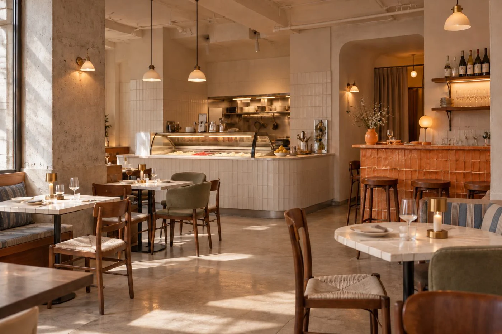

’WHILE / BRAND GUIDELINESTIME. CRAFT. COMFORT.
A little more
time together.
The identity behind an unhurried evening of Italian gelato, wine, and good company.
Enter the guide ↗
CONTENTS / 01—06
A shared language.
Principles to begin with. Details to return to.